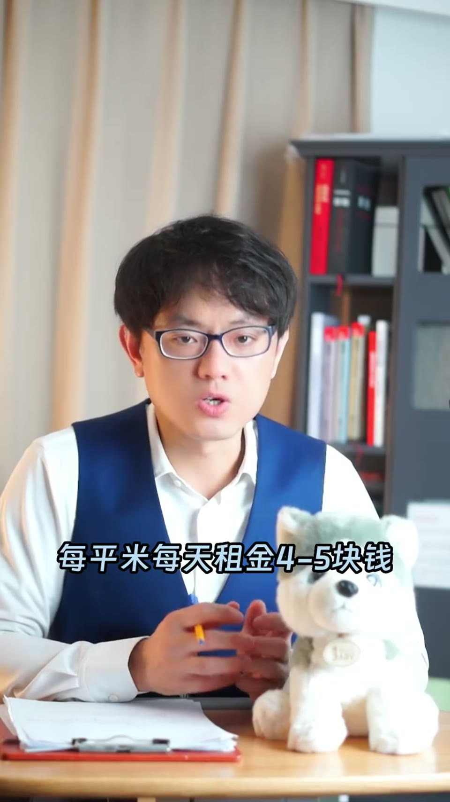
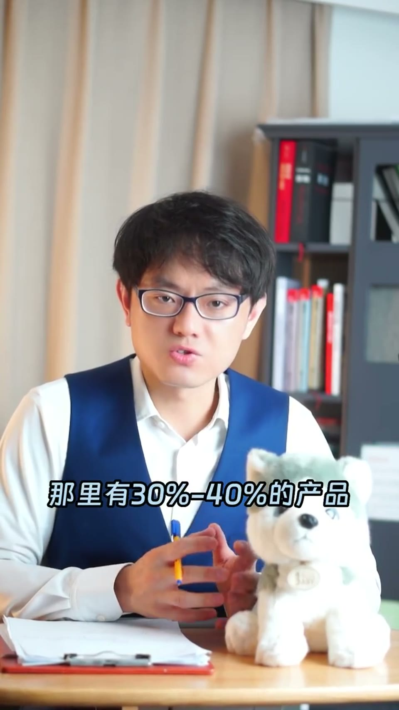

内容要点
一支 1 分半的商业观察课：对消费者不太有利的现象——个性化小餐馆越来越少，餐馆都长得越来越像。核心原因是中央厨房有两点明显优势：空间套利（市中心租金 50 元/㎡/天 vs 郊区 4-5 元，把洗切配工序搬到郊区）与节省时间（半成品拿出来翻炒就能出锅）。但享受低成本与上菜快的同时，会失去差异化与客户粘性——辩证法下，餐馆应保留两三款特色菜。
知识结构
个性化小餐馆越来越少，餐馆都长得越来越像。
新开的生鲜店与全上海门店最多的某某生鲜一样的装修、菜品、广告牌、味道。
回到市中心找宝藏小店很难了，因为中央厨房优势太明显。
市中心租金50元/㎡/天 vs 郊区4-5元；半成品翻炒两下就能出锅。
三个层面竞争：产品运营营销；辩证法下应保留两三款特色菜。
中央厨房用空间套利和时间红利消灭了餐馆的差异化——低成本上菜快的另一面，是客户失去选择你的理由。
00:00-00:35现象：餐馆越来越像
「有一个对消费者不太有利的现象，现在个性化的小餐馆越来越少了，餐馆都长得越来越像了。」
「我家附近最近新开了一家生鲜店，开业当天兴冲冲地跑过去看看有啥特色，结果一进店门就看到这种样子：你看，这和全上海门店数量最多的某某生鲜一样的装修风格、一样的菜品、一样的广告牌，味道好像也没啥区别。」
00:35-01:25中央厨房的优势
「作为消费者，我们希望餐馆有多样性。要知道声音也是分清水牌跟浑水牌的，还是可以做出差异化的。你说有没有可能回到过去，能在市中心找到很多宝藏小店？很难，基本是回不去了，因为中央厨房的优势太明显了，有两点优势，叫做空间套利和节省时间。」
「什么叫空间套利？宝藏小店一般开在市中心 CBD，租金昂贵，原材料买回来后要洗切配出加工，要占据大量的后厨空间。比如市中心每平米商铺的租金是每天 50 块钱，中央厨房一般开在郊区，每平米每天租金 4 到 5 块钱。如果物流系统稳定，把后台洗切配跟出加工的工序从市中心搬到中央厨房，就能省下房租。」
「另外一方面，上菜速度会影响顾客下次来不来。一袋半成品直接拿出来，锅里翻炒两下就能出锅，你说我快不快？」

01:25-01:48失去的是差异化
「任何餐馆都会在三个层面竞争：产品、运营、营销。中央厨房的异域在于，将来菜品这一块就不用竞争了——都是从我这买的酸菜鱼，都是一个生产品质的，还竞争个啥呢？」
「其实是有问题的。辩证法，矛盾的对立统一性：享受低成本和上菜快的同时，会失去什么？差异化、客户粘性，或者叫客户选择你的理由。餐馆还是应该保留两到三款，只……」

完整转录（65段）
以下文本由 Whisper medium 模型自动转录，可能存在少量识别误差，已尽可能修正。
有一个对消费者不太有利的现象
现在个性化的小餐馆越来越少了
餐馆都长得越来越像了
我家附近最近新开了一家生鲜店
开业当天心冲冲地跑过去看看有啥特色
结果一进店门就看到这种样子
你看这和全上海门店数量最多的某某生鲜
一样的装修风格
一样的菜品
一样的广告牌
味道好像也没啥区别
作为消费者
我们希望餐馆有多样性
要知道声音也是分清水牌跟浑水牌的
还是可以做出差异化的
你说有没有可能回到过去
能在市中心找到很多宝藏小店
口味都特别无分号
很难
基本是回不去了
因为中央厨房的优势太明显了
有两点优势
叫做空间套利和节省时间
什么叫空间套利
宝藏小店一般开在市中心CBD租金行贿
原材料买回来后要洗切配出加工
要占据大量的后出空间
比如市中心每平米商铺的租金是每天50块钱
中央厨房一般开在郊区
每平米每天租金4到5块钱
如果物流系统稳定
把后台洗切配跟出加工的工序
从市中心搬到中央厨房
就能省下房租
另外一方面
上菜速度会影响顾客下次来不来
一袋半成品直接拿出来
锅里翻炒两下就能出锅
你说我快不快
任何餐馆都会在三个层面竞争
产品 运营 营销
中央厨房的异域在于
将来菜品这一块就不用竞争了
都是从我这买的酸菜鱼
都是一个生产品质的
还竞争个啥呢
其实是有问题的
辩证法
矛盾的对立统一性
享受低成本和上菜快的同时
会失去什么
差异化
客户粘性
或者叫客户选择力的理由
餐馆还是应该保留两到三款
只有本店才做得出来
其他地方做不出来的招牌菜品
增加客户粘性
为什么好事都跟山姆会员店
会有那么多付费买会员资格的中食用
你去逛一次就知道
那里有30%到40%的产品
只有他家买 别无分号
希望这条视频能被我家附近
所有的餐馆老板都刷到